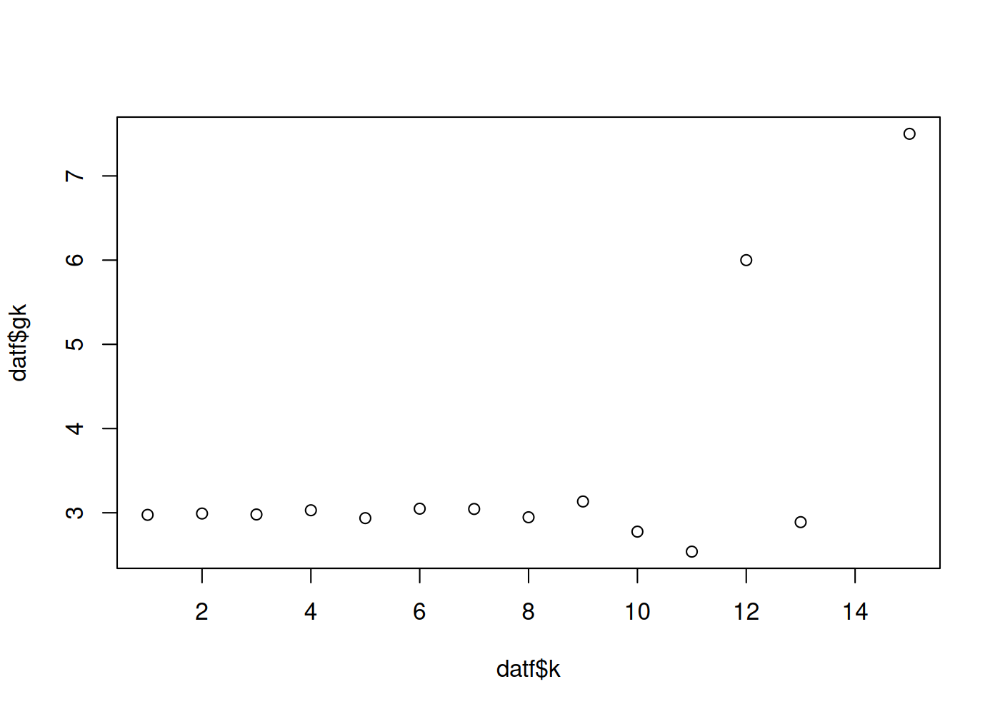
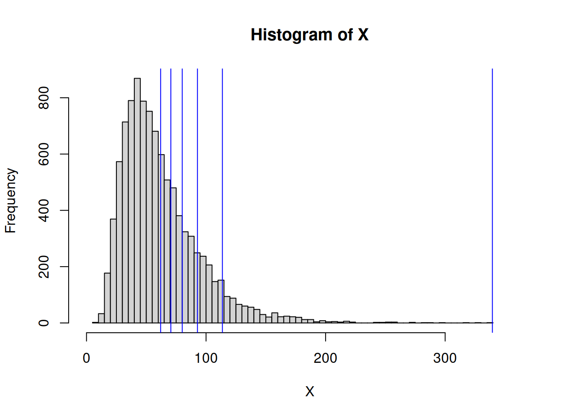
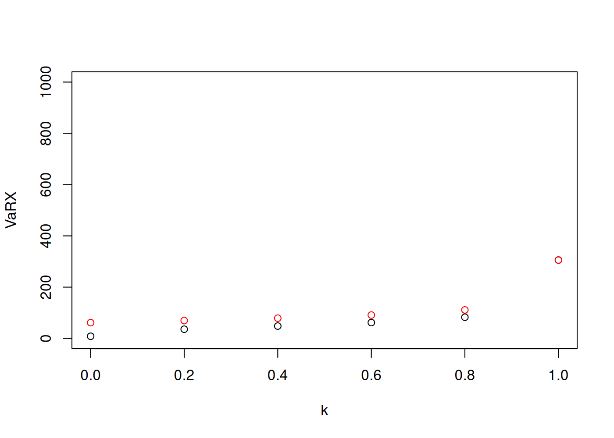
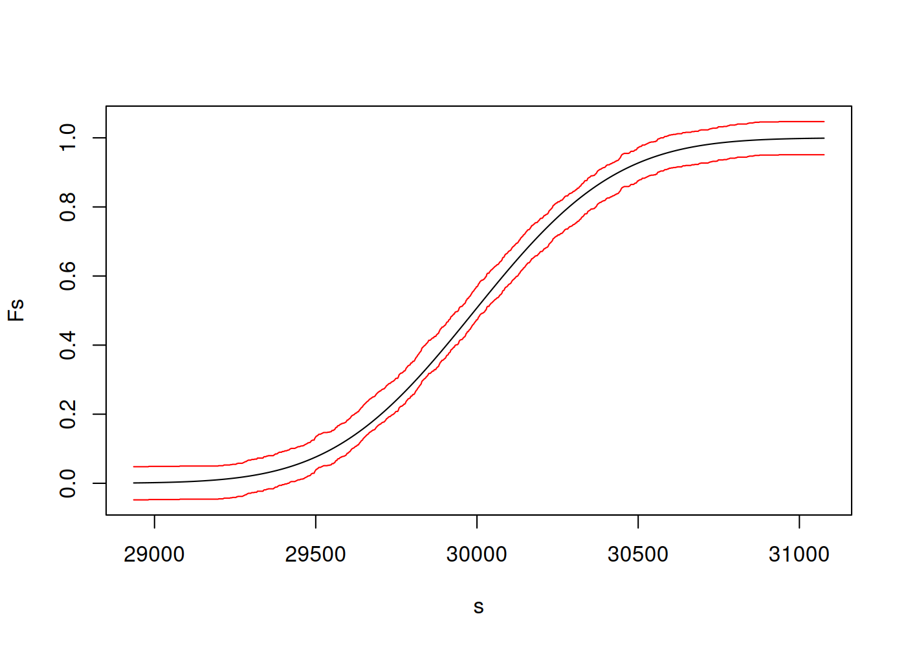
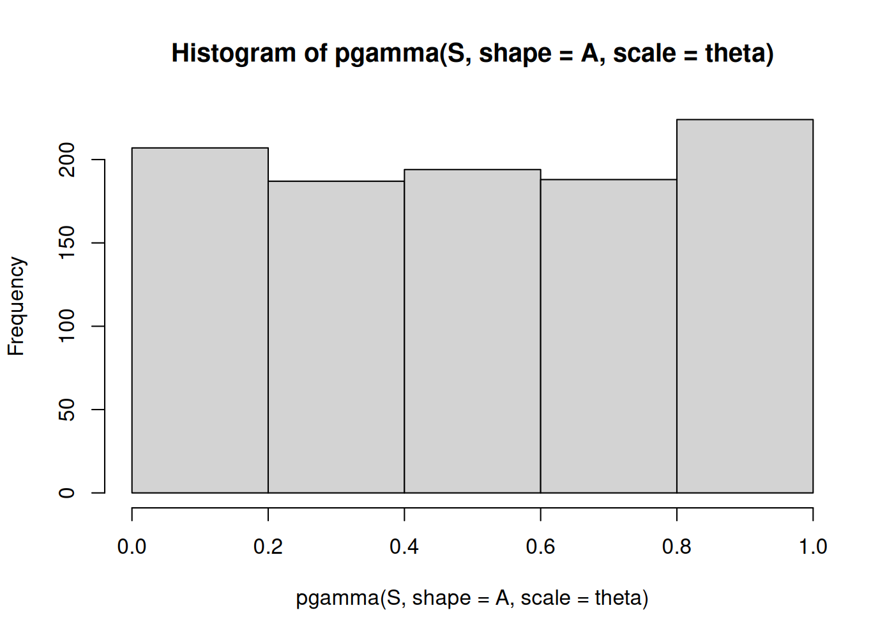
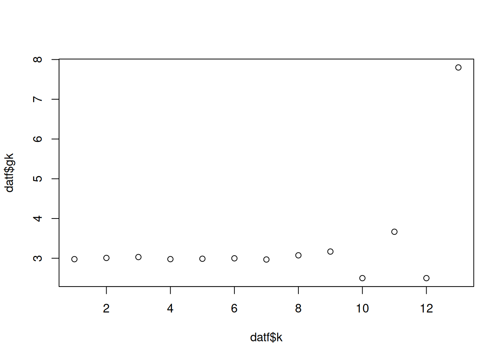

Capítulo 5 Tarificación
Para realizar la tarificación de un producto de seguro, además de estudiar y estimar el comportamiento futuro de los reclamos totales \(S\), es necesario también tomar en cuenta el capital destinado y constitutivo \(C\) para hacer frente al riesgo subscrito y los costos generales \(G\)
5.1 Tarificación en grandes términos
La tarificación que conlleva a la selección de la prima \(P\) debe tomar en cuenta como se manejan y equilibran los activos y pasivos en el negocio asegurador.
Pasivos
Capitales propios
Reservas técnicas
Reservas para otros riesgos
Deudas o depósitos en dinero recibidos por cesiones
Otras deudas por pagar
Activos
Capital suscrito no desembolsado
Activos no materiales
Inversiones
Parte de reaseguros en reservas técnicas
Deudas por cobrar
Otros activos
En el proceso de tarificación no es pertinente incluir todos los activos de la empresa, ya que muchos de estos no tienen la liquidez necesaria como para ser considerados un tipo de activo viable para la tarificación. Tampoco se toma en cuenta el dinero recibido por la cesión de primas en un ramo en particular, ya que esto constituye un nivel más arriba propio del negocio reasegurador.
En términos generales se busca equilibrar el resultado operativo del ramo de negocio \(R\) a lo largo de la vida del ramo. El resultado \(R\) a su vez está dado por la siguiente relación: \[\begin{equation} R = P + I - S - G - K \end{equation}\] donde las variables a considerarse en principio son:
\(P\) Ingreso por primas
\(I\) Ingreso por inversiones
\(S\) Pago de siniestros
\(G\) Gastos de subscripción
\(K\) Coste de capital
En varias ocasiones el ciclo del negocio puede ser corto y no permite considerar un ingreso por inversiones \(I = 0\).
Sería ideal que a lo largo de la vida del ramo el resultado mantenga \(R > 0\), pero al tratarse de un negocio que depende de la aleatoriedad de los reclamos, es bastante complicado encontrar un costo de capital \(K\) y una prima \(P\) que siempre asegure ante todo escenario que se mantenga la positividad. Ante este riesgo continuo se busca minimizar la probabilidad de ruina \(R < 0\) a un nivel \(\alpha > 0\) adecuado \[\begin{equation} P( R < 0 ) \leq \alpha \end{equation}\]
Muchas de las veces se parte del principio de equilibrio financiero 2.6.4, donde se busca la igualdad \(\mathbb{E}[R] = 0\), la misma implica la siguiente relación: \[\begin{eqnarray*} 0 & = & \mathbb{E}[R] \\ & = & \mathbb{E}[R\mid R \geq 0]P( R \geq 0 ) + \mathbb{E}[R\mid R < 0]P( R < 0 ) \\ \mathbb{E}[R\mid R \geq 0]P( R \geq 0 ) & = & -\mathbb{E}[R\mid R < 0]P( R < 0 ) \\ \frac{P( R < 0 )}{P( R \geq 0 ) } & = & -\frac{\mathbb{E}[R\mid R \geq 0]}{\mathbb{E}[R\mid R < 0]} \end{eqnarray*}\]
5.2 Medidas de riesgo
Definición 2.4 (Medida de riesgo coherente) Una medida de riesgo coeherente es una función \(\zeta: \mathbb{R} \longrightarrow \mathbb{R}\), que satisface la siguientes propiedades:
Homogenidad positiva, para cualquier \(a > 0\) \[\begin{equation} \zeta( a X ) = a \zeta( X ) \end{equation}\]
Invarianza ante las traslaciones, para cualquier \(a > 0\) \[\begin{equation} \zeta( \alpha X + a ) = \zeta( \alpha X ) + a \end{equation}\]
Monotonicidad, Si \(X \leq Y\) \[\begin{equation} \zeta( X ) \leq \zeta( Y ) \end{equation}\]
Sub-aditividad \[\begin{equation} \zeta( X + Y ) \leq \zeta( X ) + \zeta( Y ) \end{equation}\]
Definición 5.1 (Valor en riesgo) Dada una variable aleatoria a valores reales \(X\), el valor en riesgo (value at risk) de \(X\) al nivel de probabilidad \(\alpha \in (0,1)\) está dado por \[\begin{equation} VaR_{\alpha}( X ) = \inf\left\{ x \in \mathbb{R} \middle| F_X( x ) > \alpha \right\} \end{equation}\]
Proposición 5.1 Si la función de distribución acumulada \(F_X\) es contínua, entonces \(VaR_{\alpha}( X ) = F_X^{-1}( \alpha )\).
Por otra parte, \(VaR_{\alpha}\) para cualquier \(\alpha\) no es una medida de riesgo sub-additiva.
Definición 5.2 (Valor en riesgo en la cola) Dada una variable aleatoria a valores reales \(X\), el valor en riesgo en la colas (tail value at risk) de \(X\) al nivel de probabilidad \(\alpha \in (0,1)\) está dado por \[\begin{equation} TVaR_{\alpha}( X ) = \frac{1}{1-\alpha} \int\limits_{\alpha}^1 VaR_u( X )\ du \end{equation}\]
Proposición 5.2 (Coherencia de la medida TVaR) La medida de riesgo \(TVaR_{\alpha}\) es una medida de riesgo coherente si la variable aleatoria sobre la cual se mide es una variable aleatoria continua.
Definición 5.3 (Esperanza condicional en la cola) Dada una variable aleatoria a valores reales \(X\), la esperanza condicional en la cola (conditional tail expectation) de \(X\) al nivel de probabilidad \(\alpha \in (0,1)\) está dado por \[\begin{equation} CTE_{\alpha}( X ) = \mathbb{E}\left[ X \middle| X > VaR_{\alpha}( X ) \right] \end{equation}\]
Proposición 5.3 Si la función de distribución acumulada \(F_X\) de la variable aleatoria \(X\) es continua, entonces se tiene la siguiente igualdad \[\begin{equation} CTE_{\alpha}( X ) = TVaR_{\alpha}( X ) \end{equation}\]
Definición 5.4 (Valor en riesgo condicionado) Dada una variable aleatoria a valores reales \(X\), el valor en riesgo condicionado (conditional value at risk) de \(X\) al nivel de probabilidad \(\alpha \in (0,1)\) está dado por \[\begin{equation} CVaR_{\alpha}( X ) = \mathbb{E}\left[ X - VaR_{\alpha}( X ) \middle| X > VaR_{\alpha}( X ) \right] = CTE_{\alpha}( X ) - VaR_{\alpha}( X ) \end{equation}\]
Definición 5.5 (Déficit esperado) Dada una variable aleatoria a valores reales \(X\), el déficit esperado (expected shortfall) de \(X\) al nivel de probabilidad \(\alpha \in (0,1)\) está dado por \[\begin{equation} ES_{\alpha}( X ) = \mathbb{E}\left[ \max\left( X - VaR_{\alpha}( X ), 0 \right) \right] \end{equation}\]
Definición 5.6 (Valor en riesgo entrópico) Dada una variable aleatoria a valores reales \(X\), el valor en riesgo entrópico (entropic value at risk) de \(X\) al nivel de probabilidad \(\alpha \in (0,1)\) está dado por \[\begin{equation} EVaR_{\alpha}( X ) = \inf\left\{ \frac{1}{t} \ln\left( \frac{M_X( t )}{1 - \alpha} \right) \middle| t > 0 \right\} \end{equation}\]
Proposición 5.4 (Coherencia de la medida EVaR) La medida de riesgo \(EVaR_{\alpha}\) es una medida de riesgo coherente.
u <- 4
s <- 0.5
n <- 1e4
X <- rlnorm( n, meanlog = u, sdlog = s )
k <- seq( 0, 1, 0.2 )
VaRX <- quantile( X, probs = k, names = FALSE )
TVaRX <- sapply(
1:length( VaRX ),
FUN = function( i ) ifelse( k[ i ] < 1, ( 1 / ( 1 - k[ i ] ) ) * mean( X * ( X > VaRX[ i ] ) ), max( X ) ) )
hist( X, breaks = 100, xlim = c( 0, 1.1 * max( X ) ) )
abline( v = VaRX, col = 'red' )


5.3 Prima
La prima es la cantidad de dinero que un individuo o entidad pagan por una póliza de seguro, la cual está diseñada para cubrir ciertos riesgos personales o comerciales.
La determinación de las primas por parte del asegurador hace uso de la mutualización del riesgo y diversificación, para así poder asumir la transferencia del riesgo por parte de sus asegurados. Así por tanto, es deseable que cualquier método que se utilice para la estimación de primas, se satisfaga, algunas propiedades importantes.
Sin consideramos dos riesgos a cubrir \(S_1\) y \(S_2\), entonces la función que estima \(\rho\) las primas sería aconsejable satisfaga las siguientes propiedades.
Si se decide cobrir por compleo dos riesgos \(S_1\) y \(S_2\) en un mismo producto, el valor de la prima deberá ser menor o igual al valor que se resultaría de cubrir cada uno de los riesgos con productos separados. \[\begin{equation} \rho( S_1 + S_2 ) \leq \rho( S_1 ) + \rho( S_2 ) \end{equation}\]
El asumir mayor riesgo debe tener como consecuencia el aumento de la prima \[\begin{equation} \rho( S_1 ) \leq \rho( S_1 + S_2 ) \end{equation}\] Esta propiedad implica que al configurar un producto de seguro con mejor cobertura, se espera una prima de mayor costo.
Si el riesgo a cubrir está limitado, es decir \(P( S \leq M ) = 1\), para un valor \(M > 0\), entonces jamás la prima será superior a \(M\) \[\begin{equation} \rho( S ) \leq M \end{equation}\] Esto se traduce a que ningún asegurado estará interesado en adquirir una póliza para cubrir un riesgo por encima del valor total asegurado.
Es así que hay algunos principios para la estimación de primas, aquí citamos algunos de los más conocidos:
Prima neta, o prima pura de riesgo \[\begin{equation} \rho( S ) = \mathbb{E}[S] \end{equation}\]
Prima de riesgo con recargo sobre la esperanza matemática \[\begin{equation} P = \rho( S ) = (1 + \rho) \mathbb{E}[S] \end{equation}\]
Prima de riesgo con recargo sobre la varianza \[\begin{equation} P = \rho( S ) = \mathbb{E}[S] + \rho \mathbb{V}[S] \end{equation}\]
Prima de riesgo con recargo sobre la desviación \[\begin{equation} P = \rho( S ) = \mathbb{E}[S] + \rho \sqrt{\mathbb{V}[S]} \end{equation}\]
Prima de riesgo con principio exponencial para \(t > 0\) \[\begin{equation} P = \rho( S ) = \frac{1}{2} \mathbb{E}\left[e^{tS}\right] = \frac{1}{2} M_N\big( \ln M_X( t ) \big) \end{equation}\]
Prima de percentiles para un valor de confianza \(\alpha \in [0,1]\) o prima de valor en riesgo \(VaR_\alpha\) \[\begin{equation} P = \rho( S ) = VaR_\alpha( S ) = F_S^{-1}( \alpha ) \end{equation}\]
Prima de valor en riesgo en la cola (Tail Value at Risk) \(TVaR_\alpha\). Es el promedio uniforme de todos los valores en riesgo \(VaR_u\), con \(u \geq \alpha\). \[\begin{equation} P = \rho( S ) = TVaR_\alpha( S ) = \frac{1}{1-\alpha} \int\limits_{\alpha}^1 VaR_u( S )\ du \end{equation}\]
\(X_i \rightsquigarrow Gamma( \alpha_i, \theta )\), para \(i \in \{1,\ldots,n\}\), \(S \rightsquigarrow Gamma\left( \sum\limits_{i=1}^n \alpha_i \right)\)
n <- 1000
a <- runif( n, 5, 10 )
A <- sum( a )
theta <- 4
EX <- a * theta
VX <- a * theta^2
ES <- sum( EX )
VS <- sum( VX )
SDS <- sqrt( VS )
m <- 1e5
S <- rgamma( m, shape = A, scale = theta )
alpha <- 0.95
P <- ES
P <- mean( S )
P_avg <- ( 1 + alpha ) * ES
P_avg <- ( 1 + alpha ) * mean( S )
P_var <- ES + alpha * VS
P_var <- mean( S ) + alpha * var( S )
P_sde <- ES + alpha * SDS
P_sde <- mean( S ) + alpha * sd( S )
VaRS <- qgamma( alpha, shape = A, scale = theta )
P_VaR <- VaRS
P_VaR <- quantile( S, probs = alpha )
P_TVaR <- ( 1 / ( 1 - alpha ) ) * ( A * theta ) * ( 1 - pgamma( VaRS, shape = A + 1, scale = theta ) )
P_TVaR <- ( 1 / ( 1 - alpha ) ) * integrate( f = function( u ) qgamma( u, shape = A, scale = theta ), alpha, 1 )$value
P_TVaR <- mean( sapply( runif( m, alpha, 1 ), FUN = function( k ) qgamma( k, shape = A, scale = theta ) ) )
I <- as.numeric( S > VaRS )
P_TVaR <- mean( S * I ) / mean( I )n <- 1e3
S <- rgamma( n, shape = A, scale = theta )
smin <- qgamma( 0.001, shape = A, scale = theta )
smax <- qgamma( 0.999, shape = A, scale = theta )
s <- seq( smin, smax, length.out = 1000 )
Fns <- ecdf( S )( s )
Fs <- pgamma( s, shape = A, scale = theta )
alph <- 0.02
er <- sqrt( log( 2 / alph ) / ( 2 * n ) )
mean( abs( Fs - Fns ) > er )## [1] 0plot( s, Fs, type = 'l', ylim = c( -er, 1 + er ) )
points( s, Fns - er, col = 'red', type = 'l' )
points( s, Fns + er, col = 'red', type = 'l' )

5.4 Segmentación
En muchas ocasiones es necesario tener en cuenta algunas características asociadas al riesgo de asegurado, de tal forma que la prima sea lo más eficiente y adecuado según el riesgo cubierto y las características del mismo. La idea de segmentar la población es obtener grupos homogéneos con riesgos similares.
5.5 Deducibles
El principal objetivo de los deducibles, es el reducir los costos de atención de los reclamos usualmente mediante la exclusión de siniestros usualmente numerosos debidos a reclamos pequeños. En otras ocasiones, los deducibles están diseñados para incentivar al asegurado para evitar y prevenir siniestros por cierto monto límite.
Prevención de la pérdida - as the compensation is reduced by a deductible the retention of the insured is positive; This makes out a good case for avoiding the loss;
Reducción de la pérdida - the fact a deductible puts the policyholder at risk of obtaining only partial compensation provides an economic incentive to reduce the extend of the damage;
Evitar pequeñas pérdidas - where administration costs are dominant for small losses, the administration costs will often exceed the loss itself, and hence the insurance company would want the policyholder to pay it himself;
Reducción de la prima - premium reduction can be an important aspect for the policyholders, they may prefer to take a higher deductible to get a lower premium.
n <- 1e5
l <- 3
dat <- data.table( id = 1:n, k = rpois( n, lambda = l ) )
datf <- dat[ , list( fk = .N ), by = k ]
setorder( datf, k )
datf[ , fks := shift( fk, n = 1 ) ]
datf[ , gk := k * fk / fks ]
datf <- datf[ !is.na( gk ) ]
plot( datf$k, datf$gk )
dflm <- lm( formula = gk ~ k, data = datf, method = 'qr' )
a <- coef( dflm )[ 2 ]
b <- coef( dflm )[ 1 ]
p0 <- exp( -b )
k <- seq( 1, 100, 1 )
p <- p0 * cumprod( c( 1, a + b / k ) )
sum( p )## [1] 1.43664## [1] 1D <- function( x, d ) return( max( x - d, 0 ) )
d <- 100
u <- 6
s <- 0.3
n <- 1e3
X <- rlnorm( n, meanlog = u, sdlog = s )
DX <- sapply( X, FUN = D, d )
x <- seq( 0, 1e3, length.out = 500 )
FXe <- ecdf( X )
FDXe <- ecdf( DX )
Fx <- sapply( x, FUN = function( x ) FXe( x ) )
FDx <- sapply( x, FUN = function( x ) FDXe( x ) )
plot( x, Fx, type = 's' )
points( x, FDx, type = 's', col = 'blue' )
D <- function( x, M ) return( min( x, M ) )
M <- 600
u <- 6
s <- 0.3
n <- 1e4
X <- rlnorm( n, meanlog = u, sdlog = s )
DX <- sapply( X, FUN = D, M )
x <- seq( 0, 1e3, length.out = 500 )
FXe <- ecdf( X )
FDXe <- ecdf( DX )
Fx <- sapply( x, FUN = function( x ) FXe( x ) )
FDx <- sapply( x, FUN = function( x ) FDXe( x ) )
plot( x, Fx, type = 's' )
points( x, FDx, type = 's', col = 'blue' )